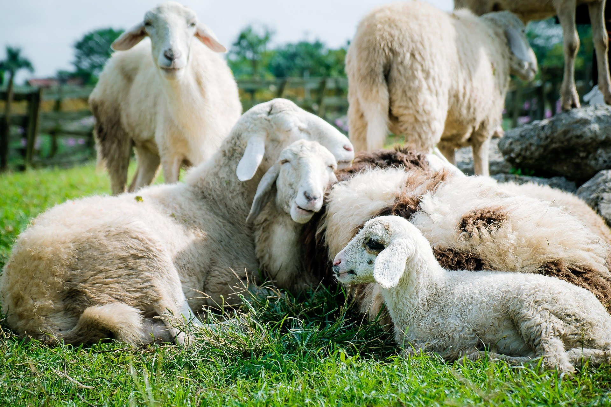

Alertas del BOE y boletines oficiales para agricultores y ganaderos, directo a tu WhatsApp.
En el campo no falla la gente: falla la información.
Cada día salen nuevas normas, requisitos, inspecciones, cambios en ayudas, papeleo y sanciones que afectan directamente a agricultores y ganaderos. Pero nadie tiene tiempo para leer 200 páginas del BOE, descifrar lenguaje jurídico o enterarse de todo antes de que sea tarde.
El resultado es siempre el mismo: o pierdes dinero, o pierdes tiempo, o te multan sin haber hecho nada “mal”.
Mientras tanto, la administración publica en su idioma… y tú trabajas en el tuyo. Así, miles de personas en el mundo rural viven desinformadas sin ser culpa suya: simplemente no hay un sistema que les explique lo importante de forma clara, rápida y útil.
Ruralicos nace para cambiar eso.
Ruralicos es un sistema que lee por ti el BOE y los boletines oficiales (estatales y autonómicos), filtra solo lo que afecta al campo y te lo manda explicado en claro a tu WhatsApp.
En vez de tragarte páginas y páginas de PDF, recibes mensajes cortos del tipo:
Tú sigues trabajando en el campo. Nosotros nos peleamos con el BOE.
Ruralicos está en fase de construcción. Esta es la hoja de ruta que estamos siguiendo para llevar la información del BOE al móvil de cada agricultor y ganadero.
Poner en marcha el motor que revisa automáticamente el BOE, el BOA y otros diarios oficiales, y detecta todo lo relacionado con agricultura, ganadería y mundo rural.
Enviar mensajes sencillos con el resumen de la norma o ayuda, a una lista reducida de usuarios beta que nos ayuden a mejorar la claridad, el formato y la frecuencia de los avisos.
Permitir que cada usuario elija si es agricultor, ganadero, mixto, su subsector (ovino, vacuno, porcino, etc.) y su zona, para recibir solo lo que le afecta.
Alertas más completas con: qué ha cambiado, a quién afecta, qué plazos hay y qué pasos concretos seguir. Además, histórico de avisos y acceso a un panel simple para revisarlo todo.
Conectar a los usuarios con asesorías rurales, técnicos, seguros y otros servicios de confianza para pasar de “estar informado” a “tener el problema resuelto”.
Ruralicos está pensado para cualquiera que viva del campo y no quiera perder tiempo con papeles ni con el BOE:
Si trabajas en el campo y sientes que “algo se te escapa” con normas, ayudas y papeles, Ruralicos es para ti.
Apúntate a la beta de Ruralicos PRO y sé de los primeros en recibir las alertas cuando el sistema esté listo.
Te avisaremos por email o WhatsApp para que puedas probarlo GRATIS al principio.